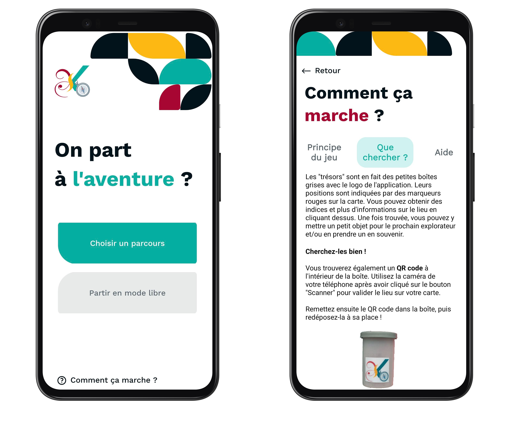

Le projet
Ce projet, inspiré du jeu « Géocaching », permet de découvrir la commune à travers une application mobile localisant une cinquantaine de mini-trésors dissimulés dans les endroits remarquables de la ville. Il a été réalisé en partenariat avec la médiathèque et le pôle culturel de la Mairie.

❓ Comment ça marche ?
Pour parcourir la ville et trouver les cachettes, il existe deux modes de jeu : le mode « Parcours thématique » et le « Mode libre ».
Mode thématique : il propose de filtrer les endroits à explorer suivant un thème (artistique, nature, historique, insolite...) et propose un chemin à suivre pour se laisser guider.
Mode libre : l'ensemble des coordonnées des endroits remarquables sont affichées sur une carte pour indiquer les cachettes des trésors les plus proches. Chaque point rouge sur la carte indique un endroit qui n'a pas encore été exploré. Grâce à votre position GPS, rendez-vous au plus proche des coordonnées indiquées, regardez la photo et explorez les alentours pour trouver le mini-trésor.

🧭 C'est quoi les mini-trésors ? Et comment on les trouve ?
Les mini-trésors sont des petites boîtes avec le logo de l'application. Elles contiennent des petits objets laissés par les autres explorateurs, mais surtout un QR code unique. Ce QR code doit être scanné depuis l'application pour valider l'exploration de cet endroit. On débloque ainsi un historique, une explication, ou une anecdote à propos du lieu, du bâtiment, de l'œuvre d'art... Le point change de couleur sur la carte et est donc ajouté à votre collection.
🎨 Design
La partie design et UI a été magnifiquement pensée et dessinée par Anaïs Appéré-Guillemot. Retrouvez-la sur son LinkedIn.
📣 Ils en parlent
L'annonce de la sortie de l'application dans le Ouest France.
La présentation du projet sur le site officiel de la ville.